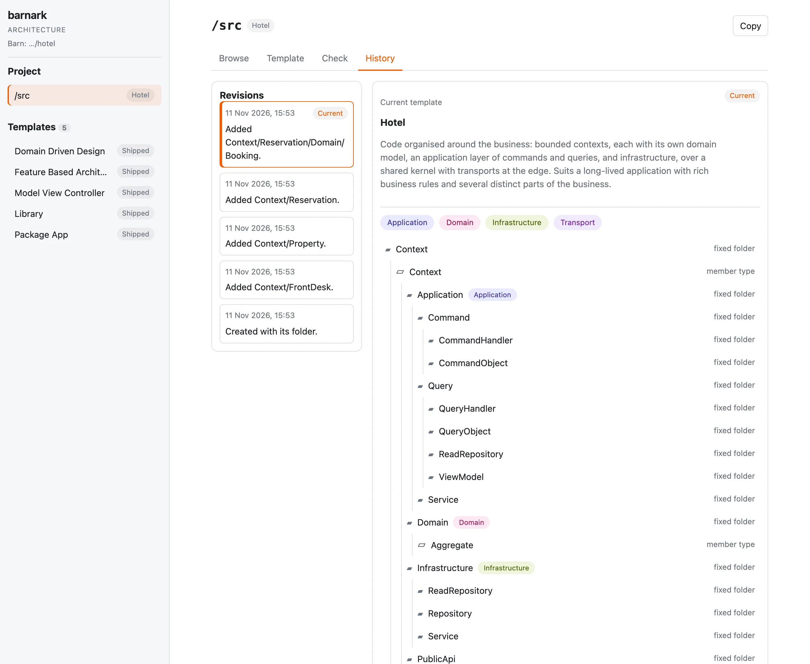

Revisions and history
A template is a decision, and a decision keeps its history.
Each of a project’s templates, bound or not, is kept as revisions. None is changed in place: every change adds
a revision, so the template can always be read as it was. Nothing is thrown away by a change, and git, which holds .barn/
with your code, keeps the files.
What makes a revision #
| What you do | The revision’s reason |
|---|---|
| Clone a template | Created with its folder. |
| Copy a template | Created as a copy. |
| Add a member | Added Context/Reservation. (the member’s place in the template) |
| Add a folder of your own | Added Scratch. |
| Change what a folder means | Changed what Scratch means. |
Barnark writes each reason, so there is nothing to type. Adding or deleting a member makes a revision, and so does changing what a folder means.
Read the history #
The History tab of the browser app lists the template’s revisions, newest first, with the time and the reason, and marks the current one. Choose a revision to see it as a read-only tree of its fixed folders, member types and members. An old revision can be looked at, and is not restored.

The command line has no history command. The files are plain JSON in .barn/barnark/catalogue/, and
Where your data lives says which is which. Don’t edit them by hand.